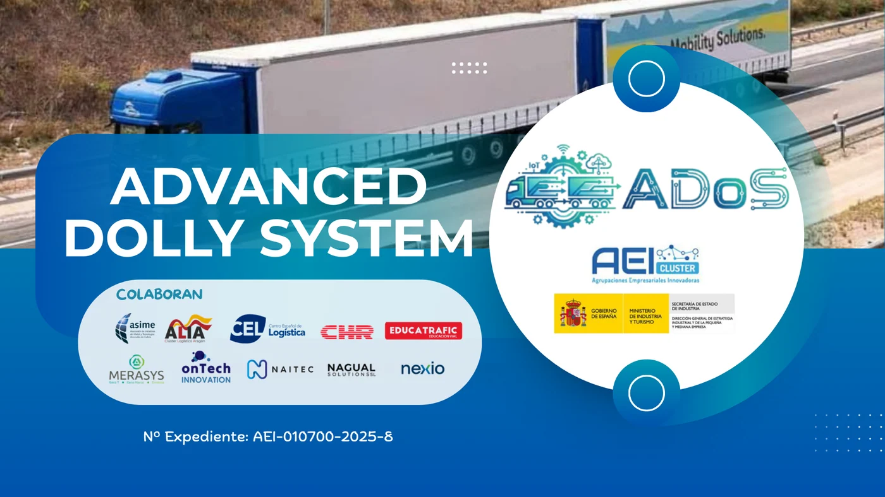

El 27 de agosto se realizó en Zaragoza la demostración final de ADoS, Advanced Dolly System. El proyecto desarrolló un dolly direccional capaz de intervenir activamente en la trayectoria de un duotrailer, tanto hacia adelante como marcha atrás. La prueba tuvo lugar en la Escuela de Conducción Educatrafic con un conjunto aportado por la empresa Dachser.
La idea responde a un problema muy concreto. Los vehículos euromodulares pueden mover más carga con una sola tractora, pero sus dos articulaciones complican el acceso a muelles, rotondas y playas diseñadas para equipos convencionales. Al retroceder, un pequeño error de ángulo puede amplificarse rápidamente y dejar el conjunto fuera de trayectoria.
Qué es un dolly y por qué importa
Un dolly es el módulo que permite vincular un segundo semirremolque con el primero. En una configuración tradicional suele comportarse como un elemento pasivo: gira como consecuencia de las fuerzas y de la geometría del conjunto. ADoS le agrega un eje direccional controlado, de manera que pueda corregir su trayectoria.
Esto no convierte al duotrailer en un vehículo autónomo. El conductor continúa gobernando la maniobra, pero recibe la ayuda de un sistema que mide los ángulos entre tractora, dolly y remolques, anticipa el movimiento y orienta las ruedas para evitar que la segunda articulación se cierre de forma incontrolada.
Las cuatro capas de la tecnología
La primera capa es la sensórica. Dispositivos instalados en las articulaciones determinan la posición relativa de cada módulo y alimentan al controlador con información en tiempo real. La precisión y la velocidad de esa medición son esenciales: una lectura tardía genera una corrección tardía.
La segunda son los algoritmos predictivos. El software no espera únicamente a que aparezca el desvío, sino que calcula cómo evolucionará el conjunto según el ángulo, la velocidad y el sentido de marcha. La tercera es la dirección activa, que transforma ese cálculo en movimiento del eje.
La cuarta es un gemelo digital, una representación virtual utilizada para simular maniobras y validar estrategias antes de llevarlas al vehículo. El proyecto también incorpora una interfaz conectada para comunicar el estado al conductor y registrar el comportamiento durante la operación.

Qué demostró en la pista
La jornada incluyó circulación hacia adelante, paso por curvas y una maniobra marcha atrás. Los organizadores informaron que el sistema mejoró la precisión del segundo remolque y permitió gestionar espacios que representan una dificultad para los dollies convencionales.
El equipo también afirmó que el duotrailer pudo resolver el radio de una rotonda con medidas de 14,5 y 6,5 metros según los criterios utilizados por la DGT. Es un resultado del prototipo en un entorno controlado; antes de una aplicación comercial deberá verificarse su durabilidad, compatibilidad y comportamiento ante fallas.
La promesa de eficiencia
Los conjuntos euromodulares buscan transportar más toneladas por viaje. Los responsables de ADoS estiman reducciones potenciales de costos de hasta 15% para megatrailers y 30% para duotrailers, junto con una baja de emisiones de CO2 por tonelada transportada que podría llegar al 30%. También proyectan recortes de 2% a 5% en los tiempos de carga y descarga.
Estas cifras no son universales. Dependen de que la unidad circule con una ocupación alta, de que la ruta admita la configuración y de que las terminales puedan recibirla sin demoras. Si un conjunto gana capacidad en carretera pero tarda demasiado en maniobrar, parte de la ventaja desaparece. Precisamente allí intenta intervenir ADoS.
Seguridad y modo degradado
Un sistema direccional electrónico necesita una estrategia clara ante fallas. Pérdida de señal, sensor fuera de calibración, baja tensión o daño en un actuador no deberían producir un giro inesperado. El diseño comercial tendrá que detectar anomalías, avisar al conductor y pasar a una condición estable que permita detenerse de manera segura.
También será necesario proteger sensores y cableado contra agua, polvo, golpes y vibraciones. El dolly trabaja cerca del suelo, recibe proyecciones de los neumáticos y soporta esfuerzos permanentes. La inteligencia del sistema no reemplaza la robustez mecánica: la complementa.
Qué cambiaría para los talleres
- Diagnóstico: lectura de fallas, datos de ángulo y eventos registrados por el controlador.
- Calibración: ajuste de sensores después de reparar enganches, ejes o componentes de dirección.
- Electricidad: control de alimentación, masas, conectores y red de comunicación entre módulos.
- Hidráulica o actuación: inspección del mecanismo que orienta el eje y de sus dispositivos de seguridad.
- Geometría: alineación, desgaste de neumáticos y comprobación de holguras que alteren las mediciones.
- Software: versiones compatibles y procedimientos documentados de actualización.
El contexto europeo
España actualizó en 2025 los requisitos técnicos y la red de itinerarios para conjuntos euromodulares. La normativa exige, entre otros puntos, señalización específica, sistemas de seguridad y el cumplimiento de recorridos aptos. El nuevo marco favorece una utilización más regular y explica el interés por resolver la maniobrabilidad en instalaciones existentes.
Muchas playas logísticas fueron diseñadas para vehículos de hasta 18,75 metros. Ampliar cada acceso sería costoso y lento. Un dolly capaz de reducir el radio de giro puede permitir que equipos más largos utilicen parte de esa infraestructura sin una reconstrucción completa.
Qué puede aprender Argentina
Argentina ya permite bitrenes de hasta 30,25 metros y 75 toneladas bajo configuraciones determinadas. ADoS no está homologado ni anunciado para el país, y las normas europeas no se trasladan automáticamente. Sin embargo, la dificultad operativa es parecida: rutas y bases concebidas para equipos más cortos limitan el aprovechamiento de conjuntos de gran capacidad.
La tecnología muestra una dirección posible. Sensores, control activo y simulación pueden complementar la capacitación del conductor y la planificación de recorridos. La pregunta ya no es solamente cuánto puede cargar un bitren, sino con qué precisión puede entrar, girar, retroceder y detenerse en la operación diaria.